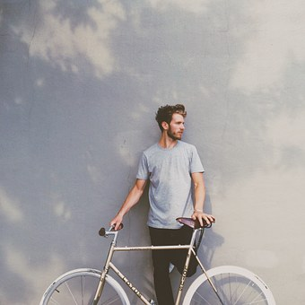
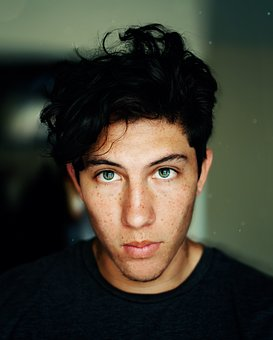
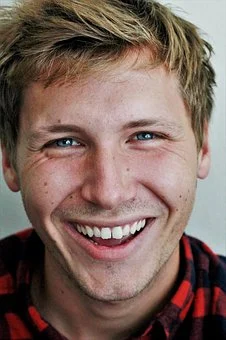

Meet Jackson Flinn
Jackson Flinn is one of our Tour Guides at Guardian Trains Southland. He has been working with us for 3 years and he leads the 'Lower, To The Lowest!' tour. Jackson grew up in Bluff, as a child, before moving to Invercargill as a teen. Jackson is very descriptive with his answers and he knows all the short-cuts through Bluff. Jackson has been very helpful through the last 3 years, and he is very excited to get to know any Train Enthusiasts who join his tour!
Meet Tracy Drews
Tracy is one our of Tour Guides at Guardian Trains Southland. She has been working with us for 18 years and she leads the 'Kingston Flyer Investigators' tour. Tracy grew up in Queenstown as a child, and she used to go to Kingston with her friends & family in the holidays. Tracy has a very bright personality and she knows all about the mechanical sides of trains, and how they work! Tracy is hoping, that you will join her tour, so she can share her love of trains, with other enthusiasts!
Meet Drake Phillips & George Templeton
 Drake & George are best friends, who grew up in Gore. They are both Tour Guides at Guardian Trains Southland and they have been leading the 'Small Towns, Big Trains' tour for 9 years. Drake & George have always shared a passion for trains, since they were young. They have been on many trains in their life-time and they hope to share their passion of trains with others, as well as learn new things and buy heaps of souvenirs!